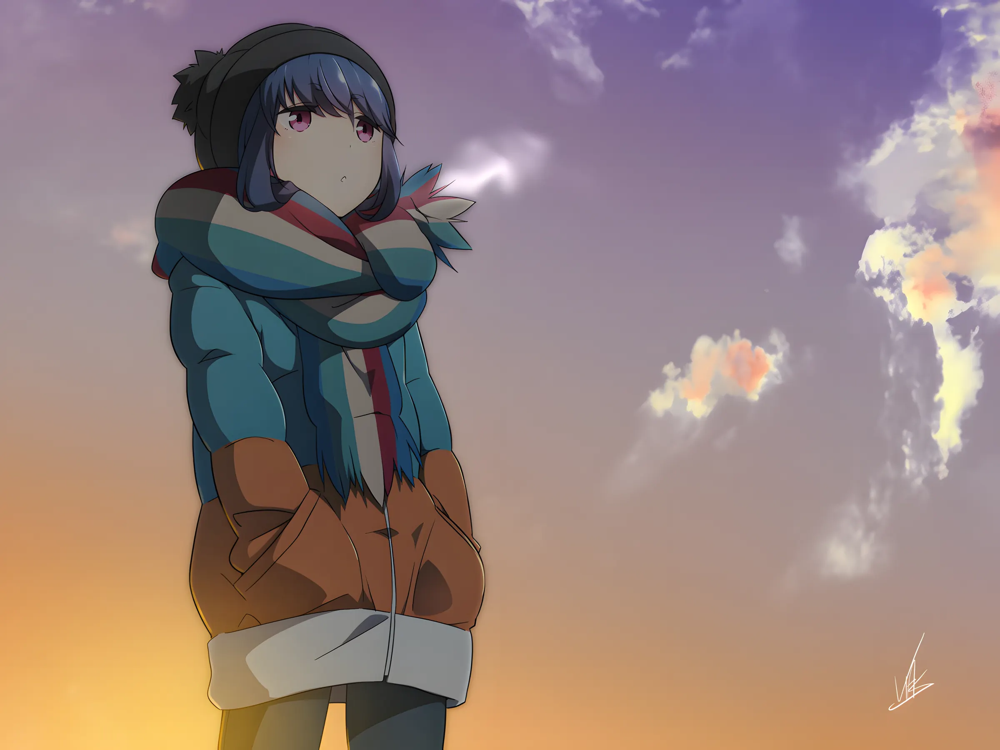
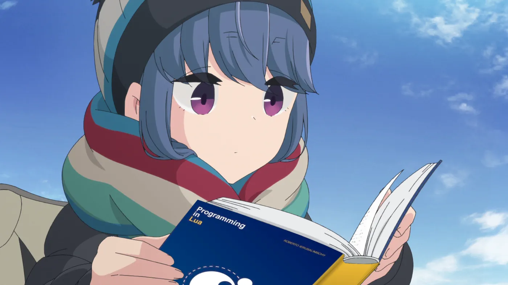
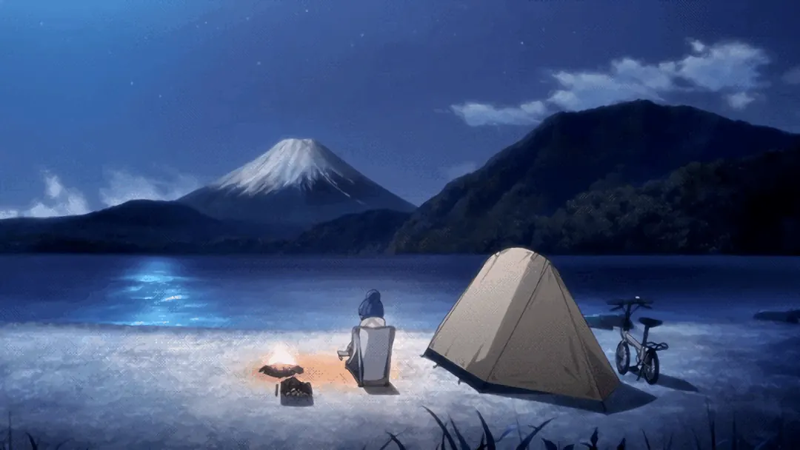
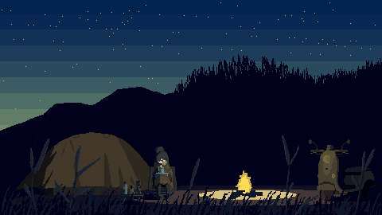

- Name
- Ryukura
- Age
- 19 years old
- Born
- 9 May 2007
- Origin
- Depok, Indonesia
- Class
- Home Lab Architect

Depok, ID WIBcampfire hours
Quiet person.
Loud uptime.
IT enthusiast & home lab architect from Depok, Indonesia. I build networks, containers and dashboards the way Rin camps — solo, unhurried, and properly.

01 — Basecamp
A home lab, pitched like a solo camp.
I'm Ryukura — a passionate IT enthusiast who'd rather build the internet than just scroll it. Networking, self-hosting and home labs are my kind of campsite.
My lab, Ryulabs, runs on Proxmox and Docker, with Prometheus and Grafana keeping watch through the night. Like one of Rin's trips, it's mostly a one-person operation: planned quietly, packed light, documented, and left running while I go read something by the fire.
- 19years around the sun
- 6tools in the pack
- v4/v6dual-stack networking
- 2024Ryulabs online since
02 — The loadout
Everything in the pack.
Six pieces of gear I trust in the field, with honest self-ratings out of ten.
Gear 01 · The bento
Docker
Experienced in containerization and deployment. Everything packed into neat little boxes, like Nadeshiko's lunch.
9/10
Gear 02 · The multi-tool
Linux basic administration
Managing users, permissions, system processes, and basic shell scripting. The tool that fixes every other tool.
9/10
Gear 03 · The lantern
Grafana & Prometheus
Monitoring, alerting, and data visualization. A light that stays on all night so nothing creeps up in the dark.
9/10
Gear 04 · The tent
Proxmox
Virtualization and server management. One sturdy shelter, many VMs sleeping soundly inside.
8/10
Gear 05 · The scooter
MikroTik & OpenWRT
Routers and networking fundamentals. Gets every packet where it's going, one quiet back road at a time.
8/10
Gear 06 · The trail map
IPv4 & IPv6 networking
Network addressing, routing, and configuration for both protocols. Knows every route, old roads and new.
8/10

ソロキャンは、
いいぞ。
// translationSolo camping is good, actually.
So is self-hosting.
03 — Trail log
Campsites I keep running.
Projects and services out in the wild. Every pin is real, so go pay them a visit.
-
Site 01 · Open source★ — BEBASID
An open hosts file that helps people reach websites that have been blocked, plus BebasDNS, a neutral public DNS for browsing safely and freely.
-
Site 02 · Community DNSSouth East Asia ΕΛΠΙΣ DNS
Free, encrypted DNS for South East Asia, run by the community and for the community. I host one of its resolvers, named after a certain drummer.
nijika.ryukura.biz.id -
Site 03 · Personal DNSDoH · DoT · DoQ dns.ryukura.biz.id
My own AdGuard Home resolver: private DNS over HTTPS, TLS and QUIC, with the ads and trackers left outside the tent.
https://dns.ryukura.biz.id/dns-query -
Site 04 · Home labEst. 2024 Ryulabs
The lab itself: Proxmox hosts, Docker stacks, Prometheus scraping everything and Grafana turning it into something nice to look at by lantern light.
-
Site 05 · Uptime KumaLive Status page
Uptime Kuma keeps an eye on every service. If something goes down overnight, this is where it shows up first.
-
Site 06 · DashboardPixel campfire incl. Homepage
The dashboard of everything: DNS stats, uptime, socials, and a little pixel campfire burning in the background.
04 — Field notes: Shima Rin
Patron saint of solo campers (and homelabbers).
Shima Rin from Yuru Camp△: solo camper, bookworm, scooter rider, and certified enjoyer of quiet. She plans alone, packs light, reads the manual, and still makes it look effortless. Honestly? The ideal sysadmin.
- Solo camping
- Reading by the fire
- Scooter road trips
- Cup noodles at altitude
- Small talk (improving)
Artwork belongs to its original artists. Yuru Camp△ © あfろ・芳文社／野外活動委員会. Shared with love, not for profit.

05 — Signals